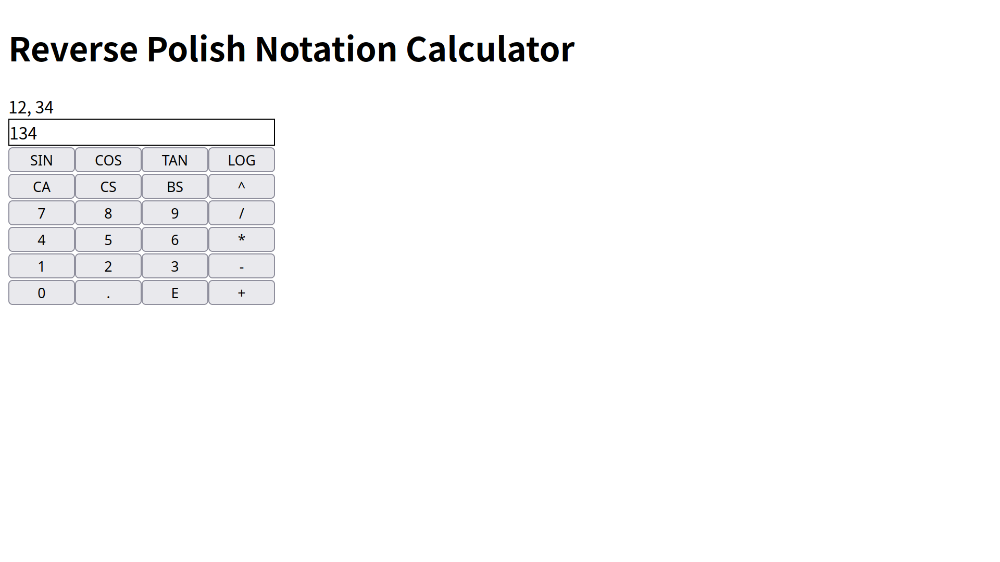

Uwasaki TSUDE's
Official Website
Back to Home
Reverse Polish Notation Calculator for JavaScript
Entity

Click to move page
Data
Title
Reverse Polish Notation Calculator for JavaScript
Date
2025/06/07
Type
Website
Comment
実は中置記法（普通の電卓）よりも圧倒的にプログラミングが簡単です。
Link
GitHub
Back to Home